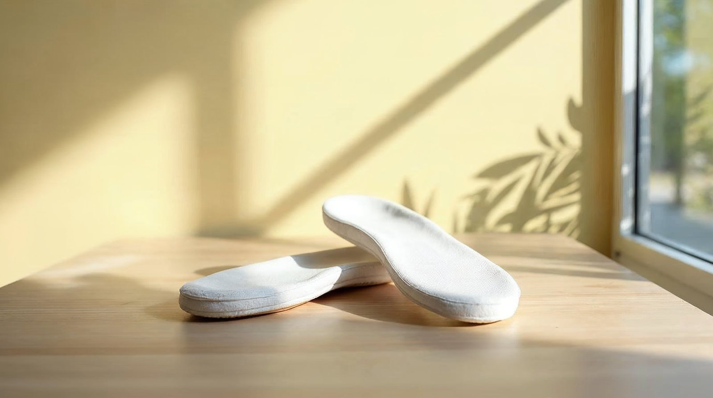
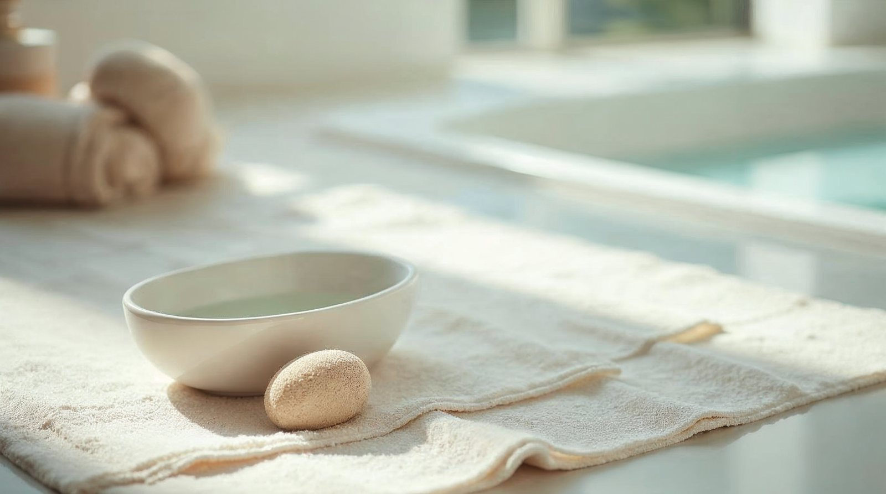
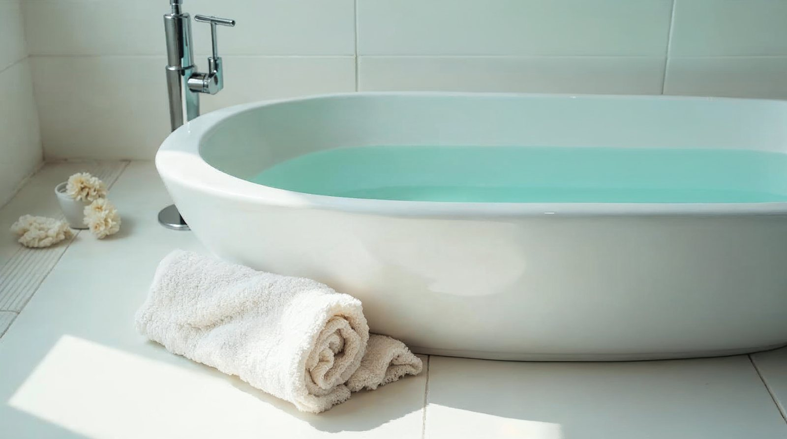

이종호 한의사 감수좋은꿈참사랑한의원 대표원장 (한의사 면허번호 19769)발행 2026-11-26 · 수정 2026-11-26
이 글의 차례
퇴근길 지하철역 계단을 오르다가 왼쪽 발바닥 한가운데가 콕 찌르듯 아픕니다. 신발 안에 작은 돌이 들어간 것 같아 벤치에 앉아 신발을 털어 보지만 아무것도 나오지 않습니다. 집에 와서 양말을 벗고 들여다보니, 발가락 뿌리 아래에 누렇고 단단한 살이 동그랗게 자리 잡고 있습니다.
굳은살과 티눈으로 오시는 분들은 대개 꽤 오래 참다가 오십니다. 처음에는 조금 딱딱한 정도라 대수롭지 않게 여겼는데, 어느새 걸을 때마다 신경이 쓰여 발을 디디는 방식까지 바뀌었다고 하십니다. 손톱깎이나 칼로 직접 깎아 보았는데 며칠 지나면 다시 그대로라는 말씀도 자주 듣습니다.
굳은살과 티눈은 그 자체로는 피부가 스스로를 지키려고 두꺼워진 결과입니다. 문제는 왜 하필 그 자리에 계속 힘이 몰리느냐입니다. 그 이유를 찾지 않고 겉의 두꺼운 살만 깎으면 같은 자리에 다시 생기기 쉽습니다. 깎는 일은 지금의 불편을 덜어 주고, 원인을 찾는 일은 다음의 불편을 줄여 줍니다.
이 글에서는 굳은살과 티눈이 어떻게 다른지, 사마귀와는 어떻게 구분하는지, 왜 같은 자리에 되풀이되는지, 신발과 걸음, 발 관리에서 무엇을 살피는지를 차근차근 정리해 보겠습니다.

굳은살과 티눈은 어떻게 다른가요?
굳은살은 피부의 바깥층이 넓고 고르게 두꺼워진 것입니다. 발가락 뿌리 아래, 발뒤꿈치, 엄지발가락 옆처럼 체중이 실리거나 신발과 마찰되는 넓은 자리에 생깁니다. 누렇고 단단하지만 경계가 흐릿하고, 대개 누르면 둔하게 아프거나 거의 아프지 않습니다.
티눈은 두꺼워진 피부가 한 점에 모여 안쪽으로 파고든 것입니다. 가운데에 반투명한 심이 박혀 있어 마치 눈처럼 보인다고 해서 티눈이라고 부릅니다. 이 심이 아래쪽 신경을 누르기 때문에 크기는 작아도 위에서 누르면 콕 찌르듯 아픈 것이 특징입니다.
티눈은 발바닥뿐 아니라 발가락 위쪽이나 새끼발가락 바깥쪽처럼 신발에 눌리는 자리에도 잘 생깁니다. 발가락 사이에 생기는 티눈은 땀에 불어 하얗고 말랑하게 보이기도 합니다. 이런 티눈은 무좀과 헷갈리기도 해서 함께 살펴봅니다.
사마귀와는 무엇이 다를까요
발바닥 사마귀는 겉모습이 티눈과 비슷해 가장 많이 헷갈립니다. 하지만 사마귀는 바이러스가 피부에 들어가 생기는 것이라 다른 자리로 번지거나 개수가 늘어날 수 있다는 점이 다릅니다.
구분하는 단서 몇 가지가 있습니다. 사마귀는 표면을 자세히 보면 작고 검은 점들이 박혀 있고, 피부의 지문 같은 결이 사마귀 자리에서 끊깁니다. 티눈은 결이 이어지고 가운데에 반투명한 심이 보입니다. 사마귀는 위에서 누를 때보다 옆에서 꼬집듯 잡을 때 더 아픈 경우가 많습니다.
이 구분은 겉으로만 봐서는 어려울 때가 많고, 관리 방법이 크게 다르기 때문에 피부과에서 확인받아 보시는 것이 좋습니다. 사마귀를 티눈인 줄 알고 깎으면 오히려 번질 수 있습니다.
왜 같은 자리에 자꾸 생길까요
피부는 같은 자리에 반복해서 힘이 실리거나 문질리면 스스로를 지키려고 두꺼워집니다. 손으로 철봉을 자주 잡으면 손바닥에 굳은살이 생기는 것과 같은 원리입니다. 그래서 굳은살과 티눈은 그 자리에 힘이 몰리고 있다는 신호이기도 합니다.
힘이 한 자리로 몰리는 이유는 사람마다 다릅니다. 진료실에서 이야기를 나눠 보면 아래와 같은 경우가 자주 겹칩니다.
- 굽이 높거나 앞코가 좁은 신발을 오래 신는 경우
- 밑창이 얇고 딱딱한 신발로 오래 서 있거나 걷는 경우
- 엄지발가락이 휘는 무지외반증이나 발가락이 굽은 경우
- 발 아치가 높거나 무너져 체중이 고르게 나뉘지 않는 경우
- 나이가 들며 발바닥 지방층이 얇아진 경우
- 발목이나 무릎이 불편해 한쪽으로 기울여 걷는 경우
굳은살이 생긴 자리를 보면 내 발이 어디로 힘을 받고 있는지가 보입니다. 굳은살은 발이 남긴 일기장 같은 것입니다. 두 번째, 세 번째 발가락 뿌리 아래에 굳은살이 두껍다면 앞발에 체중이 많이 실리고 있다는 뜻일 수 있고, 엄지 옆쪽이라면 걸을 때 발이 안쪽으로 구르고 있을 수 있습니다.
굳은살이 아프면 걸음이 달라집니다
발바닥 한 점이 아프면 몸은 자연스럽게 그 자리를 피해 디디려고 합니다. 발 바깥쪽으로 딛거나, 발뒤꿈치에만 힘을 주거나, 아픈 발을 짧게 딛는 식입니다. 이렇게 걸음이 바뀐 채 몇 주, 몇 달이 지나면 발목과 무릎, 골반과 허리에 새로운 불편이 생기기도 합니다.
그래서 굳은살과 티눈 때문에 오신 분께는 발만이 아니라 무릎과 허리 상태도 함께 여쭙니다. 반대로 무릎이나 허리가 불편해서 걸음이 바뀌었고, 그 결과로 굳은살이 생긴 경우도 있습니다. 어느 쪽이 먼저인지 살피는 것이 관리 방향을 정하는 데 도움이 됩니다.
발바닥 한 점의 통증이 몸 전체의 걸음과 이어져 있다는 것을 알아 두시면, 왜 발 말고 다른 곳까지 여쭙는지 이해가 되실 겁니다.

집에서 깎아도 될까요?
굳은살이 두꺼워지면 직접 깎고 싶은 마음이 듭니다. 하지만 칼이나 손톱깎이로 깊이 깎으면 피가 나거나 상처가 덧날 수 있습니다. 특히 티눈의 심을 파내려다 상처를 크게 만드는 경우가 많습니다.
집에서는 따뜻한 물에 발을 10분 정도 불린 뒤 부드러운 발 각질 돌이나 줄로 겉을 살살 문질러 얇게 하는 정도가 적당합니다. 한 번에 많이 없애려 하기보다 며칠에 한 번 조금씩 다듬어 주시고, 다듬은 뒤에는 보습제를 발라 주세요. 티눈 반창고처럼 각질을 녹이는 제품은 주변 정상 피부까지 짓무르게 할 수 있으니 설명서를 잘 지켜 쓰시는 것이 좋습니다.
당뇨가 있거나 발의 감각이 둔한 분, 혈액 순환이 좋지 않은 분은 작은 상처도 잘 아물지 않을 수 있습니다. 이런 분은 집에서 직접 깎지 마시고 병원에서 처치를 받으시길 권합니다.

발뒤꿈치 굳은살과 갈라짐
발뒤꿈치는 굳은살이 넓게 생기기 쉬운 자리입니다. 겨울처럼 건조한 계절이 되면 두꺼워진 뒤꿈치가 하얗게 일어나고, 깊게 갈라져 걸을 때마다 따갑다는 분이 많습니다. 뒤가 트인 슬리퍼를 오래 신거나 맨발로 딱딱한 바닥을 자주 걷는 분께 특히 흔합니다.
갈라진 뒤꿈치는 두꺼운 살이 유연함을 잃어 걸을 때 벌어지면서 생깁니다. 그래서 보습이 무엇보다 중요합니다. 저녁에 발을 씻고 물기를 닦은 뒤 뒤꿈치에 보습제를 넉넉히 바르고 면양말을 신고 주무시면 아침에 한결 부드러워진 것을 느끼실 수 있습니다.
갈라진 틈이 깊어 피가 나거나 따가울 때는 각질 돌로 문지르지 말고 보습에만 집중해 주세요. 틈이 아물고 나서 조금씩 다듬기 시작하는 것이 안전합니다.
일과 나이에 따라 달라지는 발
하루 종일 서서 일하는 분, 매장이나 주방, 병원처럼 딱딱한 바닥을 오래 걷는 분은 발바닥 전체에 굳은살이 두껍게 생기기 쉽습니다. 이런 분께는 쿠션이 있는 깔창과 일하는 중간의 짧은 휴식이 큰 차이를 만듭니다. 퇴근 뒤 발을 높게 올려 쉬는 습관도 도움이 될 수 있습니다.
연세가 드시면 발바닥의 지방 쿠션이 얇아져 같은 걸음에도 발가락 뿌리 아래가 더 쉽게 눌립니다. 젊을 때는 괜찮던 신발이 어느 순간 불편해지는 이유입니다. 이때는 밑창이 두툼하고 발볼이 넉넉한 신발로 바꾸시는 것만으로도 굳은살이 덜 생기는 경우가 많습니다.
먼저 이렇게 여쭙니다
처음 오시면 저는 대략 이런 순서로 여쭙니다. 미리 생각해 오시면 이야기가 훨씬 수월해집니다.
- 아픈 자리는 발의 어디인가요? 양발 모두인가요?
- 언제부터 아팠고, 어떤 신발을 신을 때 더 아픈가요?
- 하루에 서 있거나 걷는 시간은 얼마나 되나요?
- 직접 깎거나 티눈 반창고를 써 보셨나요?
- 무릎, 발목, 허리에 다른 불편이 있나요?
- 당뇨나 혈액 순환 문제로 다니는 병원이 있나요?
모든 질문에 정확히 답하지 못하셔도 괜찮습니다. 자주 신는 신발 한 켤레만 보여 주셔도 많은 것이 보입니다. 운동화, 구두, 실내화처럼 하루에 신는 신발을 모두 떠올려 보시면 더 좋습니다.
일상에서 먼저 해 볼 수 있는 것
굳은살 관리는 두꺼워진 살을 다듬는 것과 그 자리에 힘이 덜 몰리게 하는 것, 두 가지를 함께 하는 것입니다. 아래 가운데 쉬운 것부터 시작해 보세요.
- 앞코가 넉넉하고 굽이 낮으며 밑창이 적당히 푹신한 신발 고르기
- 신발은 오후에 발이 조금 부었을 때 신어 보고 사기
- 아픈 자리를 비워 주는 도넛 모양 패드나 깔창 써 보기
- 씻은 뒤 발바닥과 뒤꿈치에 보습제를 바르고 면양말 신기
- 오래 서 있는 날에는 중간에 앉아 발을 쉬게 하기
- 발가락을 벌리고 오므리는 운동, 수건 끌어당기기 운동 해 보기
신발 밑창을 뒤집어 보면 닳은 자리가 보입니다. 한쪽만 유난히 닳았다면 걸을 때 힘이 그쪽으로 쏠린다는 뜻일 수 있습니다. 닳은 신발은 쿠션도 줄어들었으니 바꿔 주시는 것이 좋습니다. 같은 신발을 매일 신기보다 두 켤레를 번갈아 신으면 쿠션이 회복할 시간을 얻습니다.
발바닥 근육을 부드럽게 해 주는 것도 도움이 될 수 있습니다. 앉아서 발바닥 아래에 작은 공을 두고 천천히 굴려 주거나, 손으로 발가락 뿌리 사이를 부드럽게 눌러 주세요. 다만 티눈 자리 위를 세게 누르지는 마세요.
발톱도 함께 살펴 주세요. 발톱을 너무 짧게 둥글게 깎으면 발가락 끝에 힘이 몰려 주변에 굳은살이 생기거나 발톱이 파고들 수 있습니다. 발톱은 일자로, 발가락 끝과 비슷한 길이로 다듬는 것이 좋습니다.
한의원에서 함께 살필 수 있는 경우
- 굳은살 자리가 아파 걸음이 바뀌고 발목이나 무릎, 허리까지 불편한 경우
- 발바닥과 종아리가 쉽게 뭉치고 오래 서 있으면 발이 화끈거리는 경우
- 발 아치나 발가락 모양 때문에 특정 자리에 힘이 몰리는 경우
- 오래 서서 일해 발바닥 전체가 지치고 붓는 경우
- 굳은살을 다듬어도 같은 자리가 계속 아파 걸음을 살펴보고 싶은 경우
좋은꿈참사랑한의원에 오시면 먼저 아래 '먼저 확인이 필요한' 신호가 없는지부터 봅니다. 그다음 맥을 짚고, 발을 직접 보고 만지며 걸음을 함께 살펴봅니다. 필요하다고 판단되면 체형과 발바닥 압력을 살피는 검사로 힘이 어디로 몰리는지 확인합니다.
진찰한 내용을 바탕으로 생활에서 바꿔 볼 것 하나와 함께 침, 추나, 운동 안내 가운데 지금 상태에 맞는 것을 정합니다. 굳은살과 티눈 자리 위에는 직접 침을 놓지 않고, 발과 다리의 긴장을 살피는 쪽으로 진료합니다. 깎거나 떼어 내는 처치가 필요하면 피부과나 외과를 안내합니다.
이렇게 기록해 오시면 상담이 쉬워집니다
발 통증은 신발과 하루 일정에 따라 달라지기 쉬워 기록이 도움이 됩니다. 2주 정도 간단히 적어 보세요.
- 아픈 자리 사진(양발 모두)
- 그날 신은 신발과 걸은 시간
- 통증이 심했던 때와 세기(0~10)
- 오래 서 있었던 날 표시
- 무릎, 발목, 허리 불편이 있었던 날
기록을 나란히 놓고 보면 어떤 신발과 어떤 하루가 발을 더 힘들게 하는지 보이기 시작합니다. 빠진 날이 있어도 괜찮으니 편한 방법으로 이어 가 보세요. 신발 밑창 사진도 함께 찍어 두시면 좋습니다.
발이 편해야 하루가 편합니다
발은 하루 종일 몸무게를 받아 내는 자리입니다. 그 발바닥 한 점이 아프면 걸음이 달라지고, 걸음이 달라지면 몸 전체가 영향을 받습니다. 굳은살과 티눈은 작아 보여도 하루를 꽤 무겁게 만드는 불편입니다.
이번 주에는 자주 신는 신발의 밑창을 뒤집어 보는 것부터 해 보세요. 다음에 오시면 신발과 발, 걸음을 함께 보며 그 자리에 힘이 덜 몰리게 하는 방법을 함께 찾아보겠습니다. 계단을 오르는 발걸음이 조금 가벼워지는 날을 함께 기다려 보겠습니다.
이런 증상은 먼저 확인이 필요합니다
- 굳은살 아래가 검붉게 변하거나 상처가 나 고름이 나오면서 발이 붓고 열이 나는 경우
- 당뇨가 있거나 발 감각이 둔한데 발바닥에 상처나 물집이 생겨 잘 아물지 않는 경우
이런 신호가 있으면 한의원보다 가까운 병원이나 응급실을 먼저 찾으세요.
함께 읽으면 좋은 글
- 손가락과 발바닥에 오돌토돌 올라와 자꾸 번지는 사마귀는 어떻게 살피나요?
- 발바닥 통증은 어떤 종류가 있고 어떻게 구분해서 살피나요?
- 평발이거나 발 아치가 무너져 발바닥 안쪽이 아플 때는 무엇을 살피고 어떻게 관리하나요?
- 전신 체형 검사와 족저 검사는 무엇을 살피나요?
- 당뇨가 있는데 발끝이 저리고 화끈거리거나 감각이 둔해지는 말초신경병증은 어떻게 살피나요?

여쭙는 것
- 아픈 자리는 발의 어디인가요? 양발 모두인가요?
- 언제부터 아팠고, 어떤 신발을 신을 때 더 아픈가요?
- 하루에 서 있거나 걷는 시간은 얼마나 되나요?
생활에서 해 볼 것
- 앞코가 넉넉하고 굽이 낮으며 밑창이 적당히 푹신한 신발 고르기
- 신발은 오후에 발이 조금 부었을 때 신어 보고 사기
- 아픈 자리를 비워 주는 도넛 모양 패드나 깔창 써 보기
한의원에서 함께 살필 것
- 굳은살 자리가 아파 걸음이 바뀌고 발목이나 무릎, 허리까지 불편한 경우
- 발바닥과 종아리가 쉽게 뭉치고 오래 서 있으면 발이 화끈거리는 경우
- 발 아치나 발가락 모양 때문에 특정 자리에 힘이 몰리는 경우
먼저 확인이 필요한 신호
- 굳은살 아래가 검붉게 변하거나 상처가 나 고름이 나오면서 발이 붓고 열이 나는 경우
- 당뇨가 있거나 발 감각이 둔한데 발바닥에 상처나 물집이 생겨 잘 아물지 않는 경우
한눈에 보는 표
| 구분 | 핵심 |
|---|---|
| 여쭙는 것 | 아픈 자리는 발의 어디인가요? 양발 모두인가요? 언제부터 아팠고, 어떤 신발을 신을 때 더 아픈가요? |
| 생활에서 해 볼 것 | 앞코가 넉넉하고 굽이 낮으며 밑창이 적당히 푹신한 신발 고르기 신발은 오후에 발이 조금 부었을 때 신어 보고 사기 |
| 한의원에서 함께 살필 것 | 굳은살 자리가 아파 걸음이 바뀌고 발목이나 무릎, 허리까지 불편한 경우 발바닥과 종아리가 쉽게 뭉치고 오래 서 있으면 발이 화끈거리는 경우 |
| 먼저 확인이 필요한 신호 | 굳은살 아래가 검붉게 변하거나 상처가 나 고름이 나오면서 발이 붓고 열이 나는 경우 당뇨가 있거나 발 감각이 둔한데 발바닥에 상처나 물집이 생겨 잘 아물지 않는 경우 |
자주 묻는 질문
티눈은 심을 뽑아야 없어지나요?
집에서 심을 파내려다 상처가 덧나는 경우가 많습니다. 심을 떼어 내는 처치는 피부과나 외과에서 받으시고, 그 자리에 힘이 덜 몰리도록 신발과 걸음을 함께 살피는 것이 좋습니다.
티눈과 사마귀는 어떻게 구분하나요?
사마귀는 표면에 작은 검은 점이 보이고 피부 결이 끊기며 번질 수 있습니다. 겉으로 구분이 어려울 때가 많으니 피부과에서 확인받아 보시길 권합니다.
깔창을 바꾸면 도움이 되나요?
아픈 자리를 비워 주거나 체중을 고르게 나눠 주는 깔창이 도움이 될 수 있습니다. 발 모양과 걸음에 따라 맞는 깔창이 다르니 발을 함께 보고 상의하시면 좋습니다.
굳은살 자리에 침을 놓나요?
굳은살과 티눈 자리 위에는 직접 침을 놓지 않습니다. 진찰 뒤 발과 다리, 걸음의 긴장을 살펴 필요한 진료를 정합니다.
좋은꿈참사랑한의원은 재진 때 지난번 이야기부터 이어서 여쭙니다. 진료시간과 예약은 오시는 길에서 확인하세요.
어디서 상담받을 수 있나요?
좋은꿈참사랑한의원은 서울 동작구 만양로2길 2 신성빌딩 3층·5층(서울 동작구 상도동, 7호선 상도역 3번 출구 근처)에 있습니다. 한의사 3명(이종호 대표원장, 조영기 수석진료원장, 정원영 진료원장)이 진료합니다. 진료시간은 평일 09:30~20:00(점심 13:00~14:00), 토·일·공휴일 09:30~15:00이며, 방문 전 전화로 확인을 권합니다. 예약은 네이버 예약, 카카오톡 상담, 전화 02-815-7510로 받습니다.
이 글은 일반적인 건강 정보이며 개인의 진단이나 치료를 대신하지 않습니다. 증상이 있거나 복용 중인 약이 있다면 진료를 통해 확인하세요. 치료 효과는 개인마다 다를 수 있습니다.
작성 기준: 일반적으로 알려져 있는 건강 정보를 참고해 정리했습니다(대표원장 감수). 증상 기록은 1~2주 동안 하루 1회, 비슷한 시간에 적어 오시면 지난 상태와 비교하기 쉽습니다.